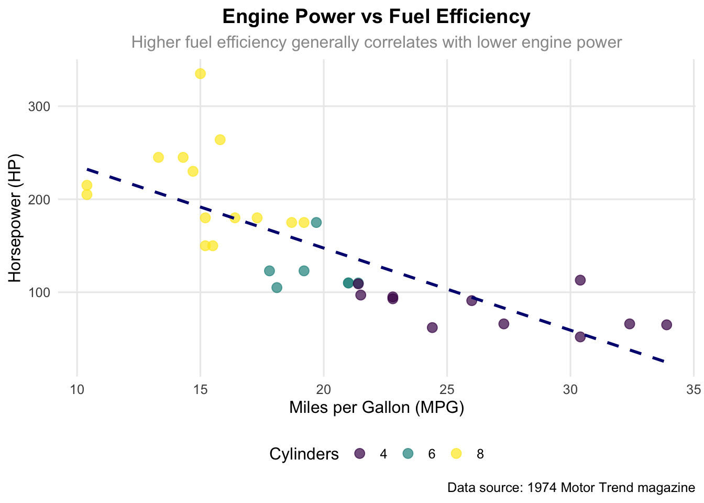

Understand the rationale for integrating GenAI with data science
Explore Large Language Models and their capabilities
Master vibe coding and prompt engineering techniques
Develop collaborative intelligence skills for human-AI partnerships
4.2 3.1 Why Data Science with GenAI
GenAI fundamentally transforms data science by automating routine tasks, enhancing analytical capabilities, and democratizing access to advanced analytics.
4.2.1 Key Advantages
Automation: Tasks like data cleaning, preprocessing, exploratory analysis, and code generation are streamlined, saving time and reducing manual errors.
Enhanced Analytics: Natural language interfaces enable intuitive data querying and insight generation, while multi-modal analysis brings together text, images, and structured data.
Democratization: Non-technical users can interact with data and models using plain language, lowering barriers to entry and enabling broader participation in data-driven work.
4.3 3.2 Large Language Models and AI Models Overview
Large Language Models (LLMs) such as GPT-4, Claude, and others have revolutionized how we interact with data and code.
4.3.1 Capabilities in Data Science
Text Analysis & Generation: LLMs can perform sentiment analysis, summarize reports, and generate code documentation.
Data Understanding: They recognize patterns, suggest features, and assess data quality in both structured and unstructured formats.
Analytical Assistance: LLMs can recommend statistical methods, interpret models, and even generate hypotheses from data trends.
4.3.2 Sample Code Exercise: Simulating LLM-Assisted Data Analysis
The function profiles the dataset, identifying variables, missing values, and data types.
It analyzes the user’s query to recommend an appropriate analysis (e.g., correlation analysis for relationships).
It generates a code template for the suggested analysis and explains the reasoning.
This simulates how an LLM can guide a user from question to actionable code, accelerating exploratory data analysis and reducing technical barriers.
4.4 3.3 Vibe Coding and Prompt Engineering
4.4.1 What is Vibe Coding?
Vibe coding is an AI-driven programming paradigm where the user describes a data or coding problem in natural language, and the AI generates or iteratively refines the code. The concept is widely attributed to Andrej Karpathy, who popularized the term in 2023–2024, and the Graphite team, who formalized it as a collaborative, conversational approach to software development.
4.4.1.1 Advantages
Rapid Prototyping: Quickly generate working code from high-level descriptions.
Lower Entry Barriers: Non-experts can create complex analyses without deep syntax knowledge.
Creativity and Exploration: Encourages experimentation and creative problem-solving.
Iterative Refinement: Code evolves through a conversational loop, improving with each prompt.
4.4.1.2 Disadvantages
Less Determinism: Results may vary based on prompt phrasing or context.
Potential for Hidden Errors: AI-generated code may work but lack robustness or best practices.
Limited Deep Customization: Fine-tuning or optimizing complex code may still require expert intervention.
Context Drift: Without careful prompt management, the AI may lose track of previous context or requirements.
4.4.1.3 Latest Developments
Integrated Development Environments (IDEs): Tools like GitHub Copilot, Graphite, and OpenAI Code Interpreter now support vibe coding workflows.
Multi-modal Vibe Coding: Some platforms incorporate diagrams, tables, or voice as part of the prompt.
Context Windows: Modern LLMs support larger context windows, enabling richer, more sustained conversations and project memory.
Team Collaboration: Vibe coding is being extended to multi-user settings, where teams and AI agents co-create codebases.
4.4.2 Key Characteristics
Emphasis on creative flow and intuition rather than rigid syntax.
Focus on the vibe (intent, tone, context) of the prompt rather than precise instructions.
Iterative, conversational development: code is refined through back-and-forth interaction.
Human-AI partnership: user steers, AI generates and suggests.
4.4.3 Vibe Coding vs. Traditional Programming
Aspect
Traditional Programming
Vibe Coding
Approach
Line-by-line code writing
Natural language problem description
Focus
Syntax accuracy and logic
Creative flow and iteration
Skills
Programming mastery
Prompt engineering and AI collaboration
Output
Deterministic code
Iterative, conversational development
Error Handling
Debugging syntax/logic
Refining prompts and context
4.4.4 Sample Vibe Coding Exercise
Show the code
# Vibe coding approach (natural language to AI)vibe_prompt <-"Create a professional scatter plot visualization that shows the relationshipbetween fuel efficiency and engine power using the mtcars dataset.Make it visually appealing with a clean theme, appropriate colors,and clear labels that would be suitable for a business presentation.Add a trend line to highlight the relationship pattern."vibe_generated_code <-function() {library(ggplot2)library(scales) mtcars %>%ggplot(aes(x = mpg, y = hp)) +geom_point(aes(color =factor(cyl)), alpha =0.7, size =3) +geom_smooth(method ="lm", se =FALSE, color ="navy", linetype ="dashed") +scale_color_viridis_d(name ="Cylinders") +theme_minimal(base_size =12) +theme(panel.grid.minor =element_blank(),legend.position ="bottom",plot.title =element_text(hjust =0.5, face ="bold"),plot.subtitle =element_text(hjust =0.5, color ="gray60") ) +labs(title ="Engine Power vs Fuel Efficiency",subtitle ="Higher fuel efficiency generally correlates with lower engine power",x ="Miles per Gallon (MPG)",y ="Horsepower (HP)",caption ="Data source: 1974 Motor Trend magazine" )}vibe_generated_code()

Interpretation of Output:
The AI translates a high-level prompt into a polished, multi-layered ggplot2 visualization.
The code uses color, size, and trend lines to communicate relationships, echoing best practices in data storytelling.
The user can further refine the prompt to adjust style, add annotations, or change data sources, making it a collaborative, iterative process.
4.5 3.4 The Role of “Context” in GenAI and Vibe Coding
Context in GenAI refers to all the information the AI uses to generate its response—including the current prompt, previous conversation, user preferences, and any relevant data or tools.
4.5.1 Why Context Matters
Relevance: Context ensures that AI responses are tailored to the user’s current task and prior interactions.
Continuity: In multi-step workflows, context allows the AI to remember earlier steps, user corrections, or project goals.
Personalization: Context enables the AI to adapt its style, terminology, or code conventions to match the user’s needs.
Reduced Ambiguity: More context leads to more accurate, less generic answers.
4.5.2 How Context is Managed
Prompt Engineering: Users can provide context explicitly (e.g., “You are an R data scientist…”).
Session Memory: Modern LLMs can retain information across longer conversations.
External Tools: Some platforms integrate with files, APIs, or databases to provide richer context.
System Prompts: Developers can set background instructions or constraints that persist throughout a session.
4.5.3 Example: Improving Context in Prompts
Basic Prompt:
“Plot mpg vs hp in mtcars.”
Contextual Prompt:
“You are an expert in automotive data analysis. Using the mtcars dataset, create a scatter plot of mpg vs hp, color by the number of cylinders, and add a regression line. The plot should be suitable for a business audience and include clear labels.”
The contextual prompt yields a more relevant, tailored, and high-quality output.
4.6 3.5 Collaborative Intelligence and Human-AI Partnerships
Collaborative intelligence is the practice of humans and AI working together—each contributing strengths to achieve superior results.
Shared Objectives: Alignment on goals and outcomes.
Adaptive Understanding: AI adjusts to changing user needs and context.
Performance Enhancement: Combining human creativity with AI speed and scale.
Experience Improvement: Making data science more accessible, efficient, and engaging.
4.6.2 Strategic Applications
Research Discovery: AI accelerates literature reviews and hypothesis generation.
Data Exploration: AI suggests analytical pathways; humans provide domain expertise.
Model Development: AI proposes models; humans interpret and refine.
Insight Generation: AI surfaces patterns; humans contextualize and communicate findings.
4.7 Hands-on Exercise: Vibe Coding and Collaborative Intelligence
Challenge:
- Use natural language prompts to generate analysis code. - Refine outputs through conversational feedback. - Combine AI-generated insights with human domain knowledge. - Compare vibe coding with traditional programming approaches. - Reflect on the collaborative process and lessons learned.
4.8 References
Aisera. 2025. “What is Human AI Collaboration?” Aisera Blog, May 29.
Bito. 2025. “AI Documentation Generator.” Bito AI.
ClanX. 2024. “Human-AI Collaboration: What it is and Why it Matters?” ClanX Blog, January 26.
Dallas Data Science Academy. 2025. “Integrating Generative AI in Data Science Projects.” Dallas Data Science Academy Blog, January 6.
Davenport, Thomas H., Nitin Mittal, and Ilya Goldin. 2024. “The Impact of Generative AI on Data Science.” DATAVERSITY, May 1.
Decodo. 2025. “How to Use LLM for Data Analysis: A Comprehensive Guide.” Decodo Blog, April 15.
Goodale, Tom. 2025. “Using Generative AI to Help with Statistical Test Selection and Analysis.” MSOR Connections 22(3): 10-17.
Graphite. 2025. “Understanding ‘Vibe Coding,’ the Future of AI-Driven Development.” Graphite Blog, July 8.
GrTech. 2025. “What is Vibe Coding? Everything You Need To Know About It.” GrTech Blog, April 21.
IBM. 2025. “What is Vibe Coding?” IBM Think Topics, April 8.
InfoRes. 2025. “The Rise of Collaborative Intelligence: Human-AI Partnership in Academic Research.” Information Research Communications 1(2): 161-163.
Karpathy, Andrej. 2025. “Vibe Coding.” Wikipedia, March 3.
Lakera AI. 2025. “The Ultimate Guide to Prompt Engineering in 2025.” Lakera AI Blog, May 21.
Monterail. 2023. “AI-Powered Coding Assistants: Best Practices to Boost Software Development.” Monterail Blog, September 11.
PromptHub. 2025. “10 Best Practices for Prompt Engineering with Any Model.” PromptHub Blog, March 5.
Prompting Guide. 2025. “General Tips for Designing Prompts.” Prompt Engineering Guide, June 7.
SecureWorld. 2024. “Human-AI Teaming in the Age of Collaborative Intelligence.” SecureWorld, November 26.
Slack. 2024. “Collaborative Intelligence: People and AI Working Smarter Together.” Slack Blog, January 15.
Source Code
---title: "Chapter 3: GenAI Applications - LLMs, Vibe Coding, and Collaborative Intelligence"---## Learning Objectives- Understand the rationale for integrating GenAI with data science- Explore Large Language Models and their capabilities- Master vibe coding and prompt engineering techniques- Develop collaborative intelligence skills for human-AI partnerships## 3.1 Why Data Science with GenAIGenAI fundamentally transforms data science by automating routine tasks, enhancing analytical capabilities, and democratizing access to advanced analytics.### Key Advantages- **Automation:** Tasks like data cleaning, preprocessing, exploratory analysis, and code generation are streamlined, saving time and reducing manual errors.- **Enhanced Analytics:** Natural language interfaces enable intuitive data querying and insight generation, while multi-modal analysis brings together text, images, and structured data.- **Democratization:** Non-technical users can interact with data and models using plain language, lowering barriers to entry and enabling broader participation in data-driven work.## 3.2 Large Language Models and AI Models OverviewLarge Language Models (LLMs) such as GPT-4, Claude, and others have revolutionized how we interact with data and code.### Capabilities in Data Science- **Text Analysis & Generation:** LLMs can perform sentiment analysis, summarize reports, and generate code documentation.- **Data Understanding:** They recognize patterns, suggest features, and assess data quality in both structured and unstructured formats.- **Analytical Assistance:** LLMs can recommend statistical methods, interpret models, and even generate hypotheses from data trends.### Sample Code Exercise: Simulating LLM-Assisted Data Analysis```{r}#| message: false#| warning: falselibrary(dplyr)library(ggplot2)llm_data_assistant <-function(data, user_query) { data_profile <-list(variables =names(data),n_observations =nrow(data),missing_values =sapply(data, function(x) sum(is.na(x))),data_types =sapply(data, class),suggested_target =names(data)[ncol(data)] )if (grepl("correlation|relationship", user_query, ignore.case =TRUE)) { suggestion <-"correlation_analysis" code_template <-"# Correlation analysiscorrelation_matrix <- cor(numeric_data, use = 'complete.obs')corrplot::corrplot(correlation_matrix, method = 'circle')" } elseif (grepl("distribution|summary", user_query, ignore.case =TRUE)) { suggestion <-"distribution_analysis" code_template <-"# Distribution analysisdata %>% select_if(is.numeric) %>% gather(key = 'variable', value = 'value') %>% ggplot(aes(x = value)) + geom_histogram() + facet_wrap(~variable, scales = 'free')" } else { suggestion <-"exploratory_analysis" code_template <-"# Exploratory data analysissummary(data)" }return(list(profile = data_profile,suggestion = suggestion,code = code_template,explanation =paste("Based on your query:", user_query,"I recommend starting with", suggestion) ))}user_query <-"I want to understand the relationships between variables"assistance <-llm_data_assistant(mtcars, user_query)cat(assistance$explanation)cat(assistance$code)```**Interpretation of Output:**- The function profiles the dataset, identifying variables, missing values, and data types.- It analyzes the user's query to recommend an appropriate analysis (e.g., correlation analysis for relationships).- It generates a code template for the suggested analysis and explains the reasoning.- This simulates how an LLM can guide a user from question to actionable code, accelerating exploratory data analysis and reducing technical barriers.## 3.3 Vibe Coding and Prompt Engineering### What is Vibe Coding?**Vibe coding** is an AI-driven programming paradigm where the user describes a data or coding problem in natural language, and the AI generates or iteratively refines the code. The concept is widely attributed to Andrej Karpathy, who popularized the term in 2023–2024, and the Graphite team, who formalized it as a collaborative, conversational approach to software development.#### Advantages- **Rapid Prototyping:** Quickly generate working code from high-level descriptions.- **Lower Entry Barriers:** Non-experts can create complex analyses without deep syntax knowledge.- **Creativity and Exploration:** Encourages experimentation and creative problem-solving.- **Iterative Refinement:** Code evolves through a conversational loop, improving with each prompt.#### Disadvantages- **Less Determinism:** Results may vary based on prompt phrasing or context.- **Potential for Hidden Errors:** AI-generated code may work but lack robustness or best practices.- **Limited Deep Customization:** Fine-tuning or optimizing complex code may still require expert intervention.- **Context Drift:** Without careful prompt management, the AI may lose track of previous context or requirements.#### Latest Developments- **Integrated Development Environments (IDEs):** Tools like GitHub Copilot, Graphite, and OpenAI Code Interpreter now support vibe coding workflows.- **Multi-modal Vibe Coding:** Some platforms incorporate diagrams, tables, or voice as part of the prompt.- **Context Windows:** Modern LLMs support larger context windows, enabling richer, more sustained conversations and project memory.- **Team Collaboration:** Vibe coding is being extended to multi-user settings, where teams and AI agents co-create codebases.### Key Characteristics- Emphasis on creative flow and intuition rather than rigid syntax.- Focus on the *vibe* (intent, tone, context) of the prompt rather than precise instructions.- Iterative, conversational development: code is refined through back-and-forth interaction.- Human-AI partnership: user steers, AI generates and suggests.### Vibe Coding vs. Traditional Programming| Aspect | Traditional Programming | Vibe Coding ||-------------- |-----------------------------|------------------------------------------|| Approach | Line-by-line code writing | Natural language problem description || Focus | Syntax accuracy and logic | Creative flow and iteration || Skills | Programming mastery | Prompt engineering and AI collaboration || Output | Deterministic code | Iterative, conversational development || Error Handling| Debugging syntax/logic | Refining prompts and context |### Sample Vibe Coding Exercise```{r}#| message: false#| warning: false# Vibe coding approach (natural language to AI)vibe_prompt <-"Create a professional scatter plot visualization that shows the relationshipbetween fuel efficiency and engine power using the mtcars dataset.Make it visually appealing with a clean theme, appropriate colors,and clear labels that would be suitable for a business presentation.Add a trend line to highlight the relationship pattern."vibe_generated_code <-function() {library(ggplot2)library(scales) mtcars %>%ggplot(aes(x = mpg, y = hp)) +geom_point(aes(color =factor(cyl)), alpha =0.7, size =3) +geom_smooth(method ="lm", se =FALSE, color ="navy", linetype ="dashed") +scale_color_viridis_d(name ="Cylinders") +theme_minimal(base_size =12) +theme(panel.grid.minor =element_blank(),legend.position ="bottom",plot.title =element_text(hjust =0.5, face ="bold"),plot.subtitle =element_text(hjust =0.5, color ="gray60") ) +labs(title ="Engine Power vs Fuel Efficiency",subtitle ="Higher fuel efficiency generally correlates with lower engine power",x ="Miles per Gallon (MPG)",y ="Horsepower (HP)",caption ="Data source: 1974 Motor Trend magazine" )}vibe_generated_code()```**Interpretation of Output:**- The AI translates a high-level prompt into a polished, multi-layered ggplot2 visualization.- The code uses color, size, and trend lines to communicate relationships, echoing best practices in data storytelling.- The user can further refine the prompt to adjust style, add annotations, or change data sources, making it a collaborative, iterative process.## 3.4 The Role of "Context" in GenAI and Vibe Coding**Context** in GenAI refers to all the information the AI uses to generate its response—including the current prompt, previous conversation, user preferences, and any relevant data or tools.### Why Context Matters- **Relevance:** Context ensures that AI responses are tailored to the user's current task and prior interactions.- **Continuity:** In multi-step workflows, context allows the AI to remember earlier steps, user corrections, or project goals.- **Personalization:** Context enables the AI to adapt its style, terminology, or code conventions to match the user's needs.- **Reduced Ambiguity:** More context leads to more accurate, less generic answers.### How Context is Managed- **Prompt Engineering:** Users can provide context explicitly (e.g., "You are an R data scientist...").- **Session Memory:** Modern LLMs can retain information across longer conversations.- **External Tools:** Some platforms integrate with files, APIs, or databases to provide richer context.- **System Prompts:** Developers can set background instructions or constraints that persist throughout a session.### Example: Improving Context in Prompts- **Basic Prompt:** "Plot mpg vs hp in mtcars."- **Contextual Prompt:** "You are an expert in automotive data analysis. Using the mtcars dataset, create a scatter plot of mpg vs hp, color by the number of cylinders, and add a regression line. The plot should be suitable for a business audience and include clear labels."The contextual prompt yields a more relevant, tailored, and high-quality output.## 3.5 Collaborative Intelligence and Human-AI PartnershipsCollaborative intelligence is the practice of humans and AI working together—each contributing strengths to achieve superior results.### Core Components- **Sustained Communication:** Ongoing, iterative dialogue.- **Shared Objectives:** Alignment on goals and outcomes.- **Adaptive Understanding:** AI adjusts to changing user needs and context.- **Performance Enhancement:** Combining human creativity with AI speed and scale.- **Experience Improvement:** Making data science more accessible, efficient, and engaging.### Strategic Applications- **Research Discovery:** AI accelerates literature reviews and hypothesis generation.- **Data Exploration:** AI suggests analytical pathways; humans provide domain expertise.- **Model Development:** AI proposes models; humans interpret and refine.- **Insight Generation:** AI surfaces patterns; humans contextualize and communicate findings.## Hands-on Exercise: Vibe Coding and Collaborative Intelligence**Challenge:** - Use natural language prompts to generate analysis code.- Refine outputs through conversational feedback.- Combine AI-generated insights with human domain knowledge.- Compare vibe coding with traditional programming approaches.- Reflect on the collaborative process and lessons learned.## ReferencesAisera. 2025. "What is Human AI Collaboration?" *Aisera Blog*, May 29. Bito. 2025. "AI Documentation Generator." *Bito AI*. ClanX. 2024. "Human-AI Collaboration: What it is and Why it Matters?" *ClanX Blog*, January 26. Dallas Data Science Academy. 2025. "Integrating Generative AI in Data Science Projects." *Dallas Data Science Academy Blog*, January 6. Davenport, Thomas H., Nitin Mittal, and Ilya Goldin. 2024. "The Impact of Generative AI on Data Science." *DATAVERSITY*, May 1. Decodo. 2025. "How to Use LLM for Data Analysis: A Comprehensive Guide." *Decodo Blog*, April 15. Goodale, Tom. 2025. "Using Generative AI to Help with Statistical Test Selection and Analysis." *MSOR Connections* 22(3): 10-17. Graphite. 2025. "Understanding 'Vibe Coding,' the Future of AI-Driven Development." *Graphite Blog*, July 8. GrTech. 2025. "What is Vibe Coding? Everything You Need To Know About It." *GrTech Blog*, April 21. IBM. 2025. "What is Vibe Coding?" *IBM Think Topics*, April 8. InfoRes. 2025. "The Rise of Collaborative Intelligence: Human-AI Partnership in Academic Research." *Information Research Communications* 1(2): 161-163. Karpathy, Andrej. 2025. "Vibe Coding." *Wikipedia*, March 3. Lakera AI. 2025. "The Ultimate Guide to Prompt Engineering in 2025." *Lakera AI Blog*, May 21. Monterail. 2023. "AI-Powered Coding Assistants: Best Practices to Boost Software Development." *Monterail Blog*, September 11. PromptHub. 2025. "10 Best Practices for Prompt Engineering with Any Model." *PromptHub Blog*, March 5. Prompting Guide. 2025. "General Tips for Designing Prompts." *Prompt Engineering Guide*, June 7. SecureWorld. 2024. "Human-AI Teaming in the Age of Collaborative Intelligence." *SecureWorld*, November 26. Slack. 2024. "Collaborative Intelligence: People and AI Working Smarter Together." *Slack Blog*, January 15.